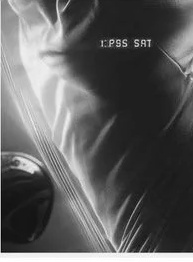
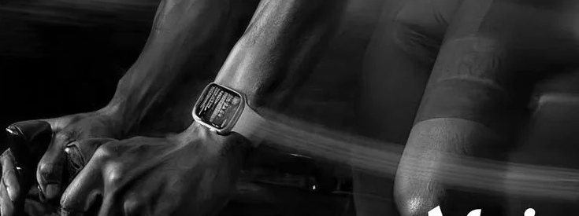

L E S S S A I Dfurion
MORE DONE. 
Our logo. The story of our brand.
At the heart of our brand, our logo takes center stage. With its simplicity and confidence, it encapsulates the essence of our mission and strength.
A mark built to move. Purposeful, direct, and unmistakable. It reflects the drive to keep showing up—and the quiet confidence that follows.
Less said. More done. Every element moves us forward.
Built for the moments that demand more. Designed for the people who give it.

Purpose in every detail. Form follows movement, wherever it takes you.
There is strength in simplicity. Keep what matters. Let everything else fall away.

Stay focused on the work. The small, repeated effort. The moment you choose to go again.

Precision meets persistence.
Made for the work you put in.
And everything that comes next.